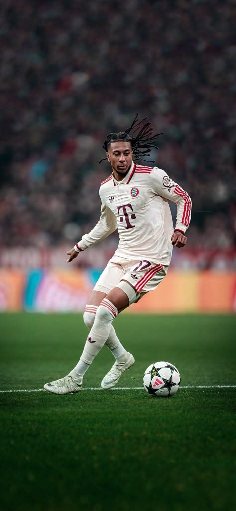

Bio rápida
Nombre: Michael Akpovie Olise
Nacimiento: Londres, 12 diciembre 2001
Perfil: extremo creativo, visión y último pase.
Diseñada como un hub global para fans: perfil, logros, datos avanzados, galería curada y experiencias interactivas para seguir su evolución en la élite.
Explorar dashboardNombre: Michael Akpovie Olise
Nacimiento: Londres, 12 diciembre 2001
Perfil: extremo creativo, visión y último pase.
Jugador del Bayern de Múnich, protagonista por su desequilibrio en el último tercio y su lectura táctica sin balón.
Internacional con Francia, aportando calidad técnica y ritmo diferencial en partidos de alta exigencia.
